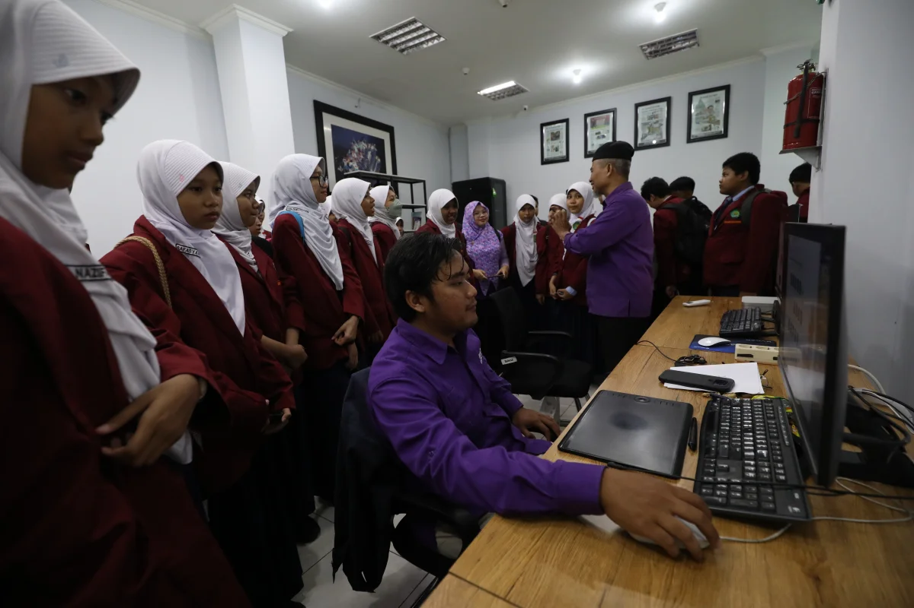
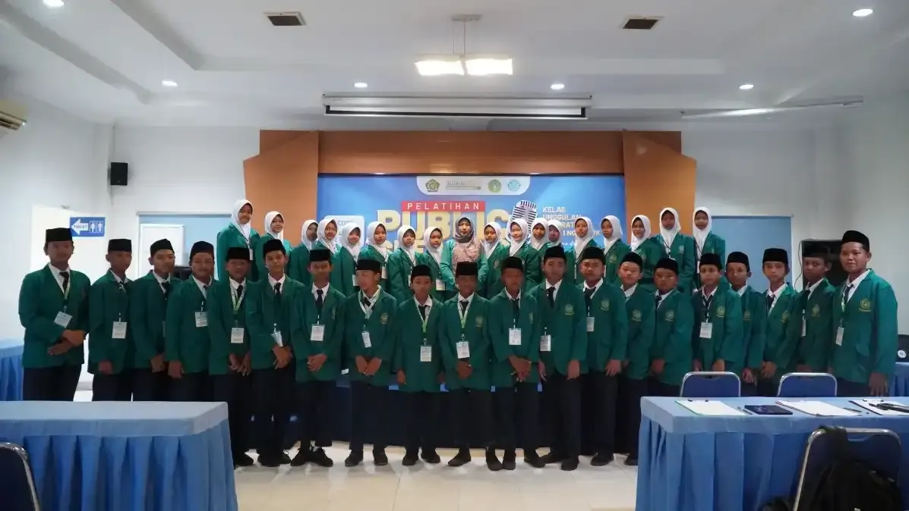
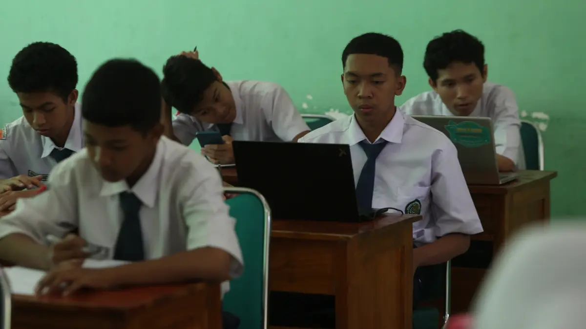
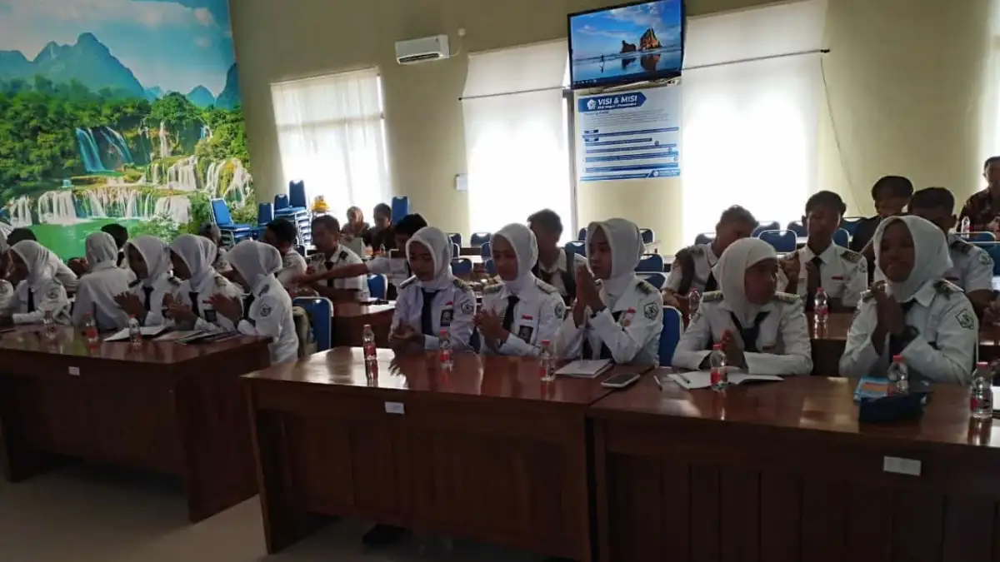
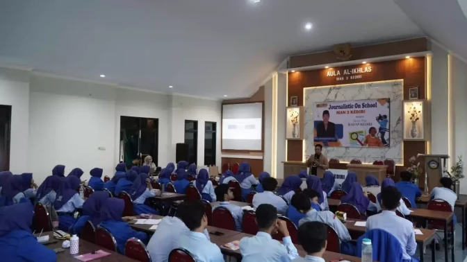

Pelatihan Coding & AI untuk Pelajar
Pelatihan inovasi digital kreatif — dasar pemrograman, pembuatan website, dan konsep Artificial Intelligence (AI) untuk siswa SD/MI, SMP/MTs, hingga SMA/MA/SMK agar siap dan percaya diri menghadapi era teknologi.

Bekali Generasi Muda dengan Keterampilan Digital Masa Depan
Di era kecerdasan buatan yang berkembang pesat, kemampuan coding dan pemahaman AI bukan lagi keistimewaan — melainkan kebutuhan dasar. Program ini hadir untuk memastikan setiap pelajar di Kediri Raya tidak hanya menjadi pengguna teknologi, tetapi juga pencipta solusi digital yang kreatif dan inovatif.




Detail Program
- Kategori Coding, AI & Inovasi Digital
- Format Workshop Praktik & Project-Based
- Durasi 2 Hari (In-House Fleksibel)
- Jenjang SD/MI · SMP/MTs · SMA/MA/SMK
- Instruktur Digital Innovation RK Institute
- Sertifikat Ya, dari RK Institute
- Kurikulum Sesuai P5 Merdeka Belajar
Tentang Program Ini
Pelatihan Coding & AI dari Radar Kediri Institute adalah program inovasi digital yang dirancang khusus untuk pelajar dari berbagai jenjang pendidikan. Dengan pendekatan project-based learning yang kreatif dan menyenangkan, peserta tidak hanya belajar teori — mereka langsung membuat karya nyata: mulai dari animasi sederhana, website, hingga eksperimen dengan tools berbasis kecerdasan buatan.
Program ini sejalan dengan arah Kurikulum Merdeka yang menekankan penguatan literasi digital dan dapat diintegrasikan sebagai bagian dari kegiatan P5 (Projek Penguatan Profil Pelajar Pancasila). Sekolah yang menyelenggarakan program ini tidak hanya membekali siswanya dengan skill masa depan, tetapi juga mendapatkan publikasi kegiatan di Jawa Pos Radar Kediri sebagai bentuk penguatan citra dan reputasi lembaga.
Materi yang Dipelajari
Pengenalan Coding untuk SD/MI
Belajar konsep dasar pemrograman menggunakan platform visual berbasis blok (block-based coding) yang menyenangkan. Siswa diajak membuat animasi, cerita interaktif, dan game sederhana tanpa perlu mengetik kode sama sekali.
Logika & Algoritma untuk SMP/MTs
Memahami cara berpikir komputasional (computational thinking): urutan instruksi, perulangan (loop), percabangan (if-else), dan pemecahan masalah melalui coding. Fondasi penting sebelum masuk ke bahasa pemrograman sungguhan.
Pembuatan Website untuk SMA/SMK
Praktik langsung membangun halaman website menggunakan HTML, CSS, dan dasar JavaScript. Peserta menghasilkan karya nyata berupa website personal atau profil sederhana yang bisa langsung dipublikasikan online.
Eksplorasi Artificial Intelligence (AI)
Mengenal konsep dasar AI secara praktis: bagaimana mesin belajar (machine learning), contoh penerapan AI di kehidupan sehari-hari, dan cara memanfaatkan tools AI generatif secara produktif dan bertanggung jawab.
Problem Solving & Inovasi Digital
Sesi challenge berbasis proyek di mana peserta bekerja dalam tim untuk merancang solusi digital atas permasalahan nyata di lingkungan sekolah atau komunitas mereka — melatih kreativitas, kolaborasi, dan kemampuan berpikir kritis.
Dokumentasi Pelatihan
Rekam jejak workshop Coding & AI bersama sekolah-sekolah di Kediri Raya yang antusias menyambut era teknologi